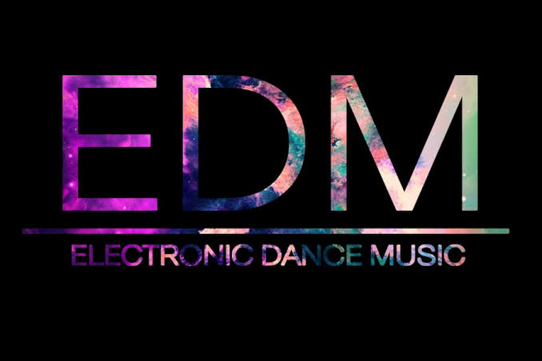

MUSICA EDM
sean bienvenidos a esta página dedicada a la musica EDM espero sea de su agrado.

Primero
tomemos en cuenta que la musica EDM (Electronic Dance Music) es un
conjunto de generos de musica electronica. Los cuales son los
siguientes:
siendo estos los complementos del famoso genero EDM.